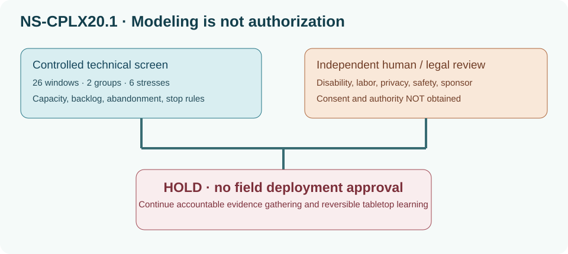

NS-CPLX20.1 — Complex intervention and learning laboratory
Book 20, Management of Complex Systems (EN.645.742). Fictional Northstar Regional Emergency Access.
Purpose and provenance
This teaching case inherits only the illustrative four-hour trip-slot quantities from the Book 19 enterprise case (62 accessible and 186 standard requests; baseline accessible 55 and standard 178 slots). It does not inherit any real agency data, lawful permissions, approved budgets, stakeholder interviews, social legitimacy or calibrated demand model. Every new behavioral coefficient, scenario loss, weighting, cost and approval state is explicitly constructed for pedagogy. Approvals are set to false to prevent accidental qualification claims.
The 26-window model is a discrete-time stock/flow sensitivity exercise, not a validated emergency-services system dynamics model. It counts every request as served, abandoned, or remaining in backlog. Its changing trust_proxy is an artificial demand response, not a measured sentiment indicator or a consent proxy. A window corresponds to a repeated illustrative peak four-hour demand exercise, not 26 measured weeks of field observations. Scenario weights sum to one for an instructional screen only, not as empirical probabilities.
Artifacts and how to reproduce
- Controlled inputs and computational source.
- Computed evidence JSON, policy screening results, and full scenario results.
- Four policy-specific 26-window exports (
weekly-status_quo.csv,weekly-routing_only.csv,weekly-co_design.csv,weekly-adaptive_guardrails.csv). - Actor rights register, method and claim matrix, and proposed intervention and stop rules.
From the repository root, run python3 SE/K/B20/tools/step03_book20_complexity.py, then python3 scripts/check_step03_book20.py. The scripts use only Python's standard library for the model; the reader synchronizer and structural checks use the project authoring dependencies.
Decision logic
The numerical screen requires both groups to meet a 90% fraction of generated requests over the horizon, with no three-window accessible shortfall below 80%. The service-fraction measures are mathematically defined but are not observable end-to-end journey success. The synthetic weights do not represent real event frequencies. All policies remain HOLD for field intervention due to missing independent permissions and validation. The source course's authorial-integrity and independent assessment requirements still apply.
Model limitations and adversarial questions
The model omits actual dwell time, path-level network congestion, rescue triage, real consent, labor agreements, cybersecurity control validation, observed trust, mode switching, spatial inequality, political coercion and model structural error. Time-step rounding and arbitrary abandonment are consequential design choices. Re-run altered demand/supply and feedback parameters before describing even a conditional robust candidate. No computed outcome establishes social legitimacy; independent sources and affected-party participation must determine admissible action.
